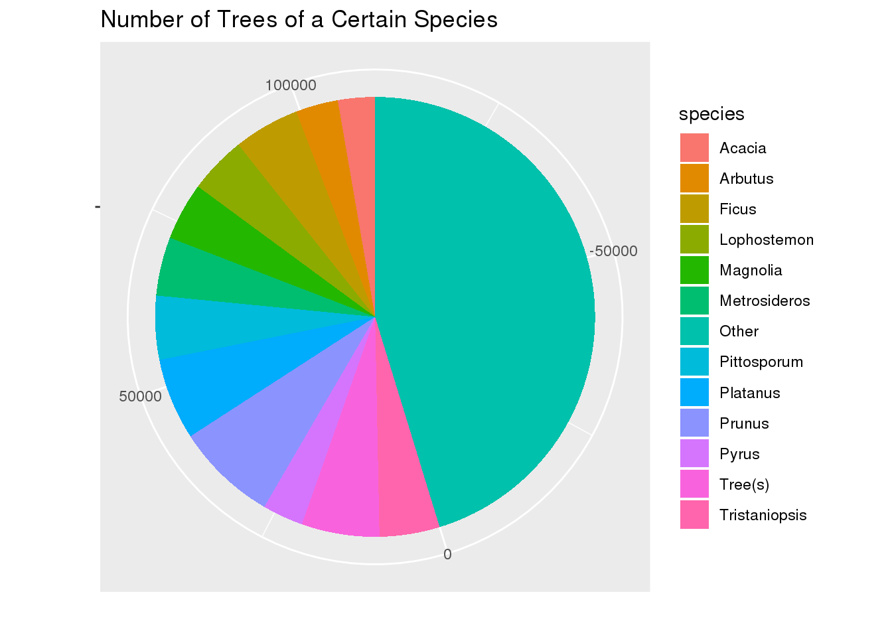
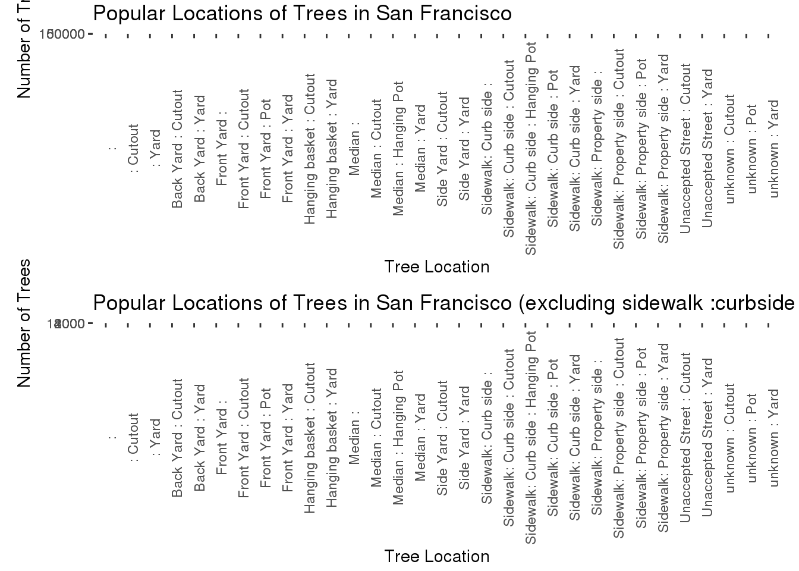
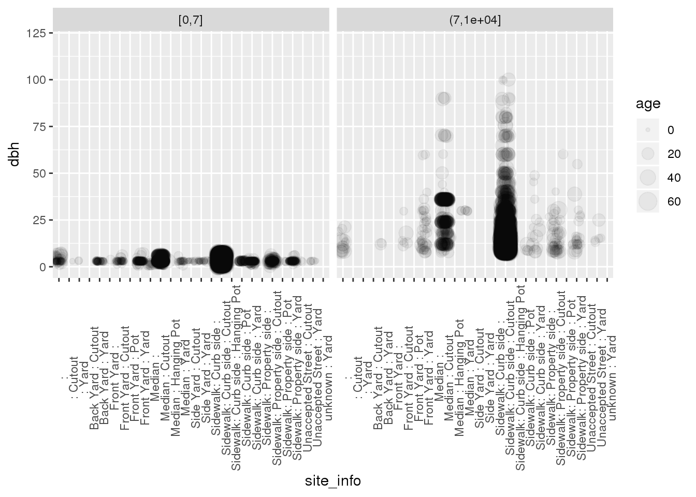

library(ggplot2)
library(dplyr)##
## Attaching package: 'dplyr'## The following objects are masked from 'package:stats':
##
## filter, lag## The following objects are masked from 'package:base':
##
## intersect, setdiff, setequal, unionlibrary(stringr)
library(tidyverse)## ── Attaching packages ─────────────────────────────────────── tidyverse 1.3.0 ──## ✓ tibble 2.1.3 ✓ purrr 0.3.3
## ✓ tidyr 1.0.0 ✓ forcats 0.4.0
## ✓ readr 1.3.1## ── Conflicts ────────────────────────────────────────── tidyverse_conflicts() ──
## x dplyr::filter() masks stats::filter()
## x dplyr::lag() masks stats::lag()library(here)## here() starts at /home/alcruzan/DASC-bloglibrary(patchwork)Using the sf_trees.csv dataset from Tidy Tuesday, I investigate what the trees are like in San Francisco. The data has 192,987 observations and 12 variables. The variables are the ID given to the tree, the legal status of the tree, the species of the tree, the street address, the order of the trees in the case that there are multiple trees at one location, where the tree is on the lot, the primary caretaker of the tree, the date it was planted, the diameter of the tree, the dimension of the plot, the latitude the plant is at, and the longitude the tree is planted.
sf <- read.csv(here("tidytuesday-master", "data", "2020", "2020-01-28", "sf_trees.csv"))Question 1 : Where are the trees in San Francisco and who owns them?
ggplot(sf, aes(x = (longitude*-1), y = latitude, color = caretaker)) +
geom_point(size = 0.001, alpha = 0.2) +
ylim(37.7,37.825) +
theme(legend.position = "none") +
scale_x_continuous(trans = "reverse") +
xlim(122.52, 122.36) +
xlab("Longitude") +
ylab("Latitude") +
ggtitle("Map of the Trees in San Francisco")## Scale for 'x' is already present. Adding another scale for 'x', which will
## replace the existing scale.## Warning: Removed 2963 rows containing missing values (geom_point).
This reveals that there is a lot about where the trees are in San Francisco. A person can easily see the street layout of San Francisco. Also, a person can see how well the streets are lined with trees. It also shows where the data set didn’t collect data, which is parks. The long strip in the left side of the map is actually Golden Gate Park which has several trees, but these trees were not included in the scope of the research. The central blank area as well as the North West and South West are areas reserved for more nature, usually golf courses. the only area with no trees that actually has no trees is the area in the South East. This is a primarily commercial area with few street decorations or Trees. The blue indicates private trees, which suggests that while the trees may be mandatory to be on a street, it is still the land owner’s responsibility to take care of the tree.
Question 2: What is the most common type of tree?
species_list <- sf %>%
mutate(species = word(species, 1, sep=" ")) %>%
separate_rows(species, sep = ' ') %>%
group_by(species) %>%
summarize(Count = n()) %>%
filter(Count >= 5000)
x <- 0
for (i in 1:12) {
x <- x + species_list[i,2]
}
z <- 19287 - x
species_list[nrow(species_list) + 1,] = c("Other", z)
ggplot(species_list, aes(x= "", y=Count, fill = species)) +
geom_bar(width = 10, stat = "identity") +
coord_polar("y", start = 0) +
xlab(" ") +
ylab(" ") +
ggtitle("Number of Trees of a Certain Species")
Surprisingly, there is a lot of variety in tree. About 50% of trees have less than 5000 of the same type of tree. Considering there are around 200,000 trees, it means that only 11 tree types are over 2.5% of the trees in the San Francisco area. This indicates that the people care about their yards and their plants and want their yards to be more unique and have personality, so they choose a more unique tree. The area also must be habitable for any different tree types because there is so much of a variety. If there was a large potion of any one type of tree, it would be assumed that there is a smaller tree pool to choose from for consumers. However, it looks like people have found that many trees can grow well in the San Francisco area.
Question 3: Does site of the tree affect the diameter of the tree?
g1 <- ggplot(sf, aes(x= site_info)) +
geom_bar() +
theme(axis.text.x = element_text(angle = 90)) +
xlab("Tree Location") +
ylab("Number of Trees") +
ggtitle("Popular Locations of Trees in SF")
g2 <- ggplot(sf, aes(x= site_info)) +
geom_bar() +
theme(axis.text.x = element_text(angle = 90)) +
ylim(0,12500) +
xlab("Tree Location") +
ylab("Number of Trees") +
ggtitle("Locations Excluding Curbside Cutouts")
g1 + g2## Warning: Removed 1 rows containing missing values (geom_bar).
As seen in the graph, a majority of the trees are on sidewalk curbs. This is most likely why we see such a distinct street layout in the spatial map. These trees most likely consists of the more common tree types because they are on streets. Since they are on streets, it suggests that there is some degree of uniformity set in place by some form of city official or home owners association. Of the relatively smaller tree locations, they are mostly in yards. This I believe is where the variation in tree types comes from. In yards, it is more likely that people can take more creative freedom on what kind of tree they want. While some trees look nice on a curb, other more exciting and unique trees are in private yards to add more character to one’s home.
today <- 2020
tree_age <- sf %>%
filter(!is.na(dbh)) %>%
mutate(age = substr(date, 1,4)) %>%
mutate(age = as.numeric(age)) %>%
mutate(age = today - age)
b1 <- ggplot(tree_age, aes(x= site_info, y = dbh)) +
geom_boxplot() +
theme(axis.text.x = element_text(angle = 90)) +
ylim(0,125) +
xlab("Tree Location") +
ylab("Diameter") +
ggtitle("Diameter of Tree per Location")
b2 <- ggplot(tree_age, aes(x= site_info, y = age)) +
geom_boxplot() +
theme(axis.text.x = element_text(angle = 90)) +
ylim(0,70) +
xlab("Tree Location") +
ylab("Age") +
ggtitle("Age of Tree per Location")
b1 + b2## Warning: Removed 13 rows containing non-finite values (stat_boxplot).## Warning: Removed 113239 rows containing non-finite values (stat_boxplot).
These graphs shows that trees that grow in yards grow bigger for their age then other trees. While other spots may use trees as decoration, trees should be in the place where they grow the best.
Conclusion
San Francisco has many beautiful trees in its cities that like to line the roads and street layout. It also has many trees that are in large parks as well as in people’s personal yards. There is a lot of variation in the tree types, and no one tree has near a large portion at all. This adds to the diversity of the city However, if trees grew in yards, the trees would grow bigger and better.